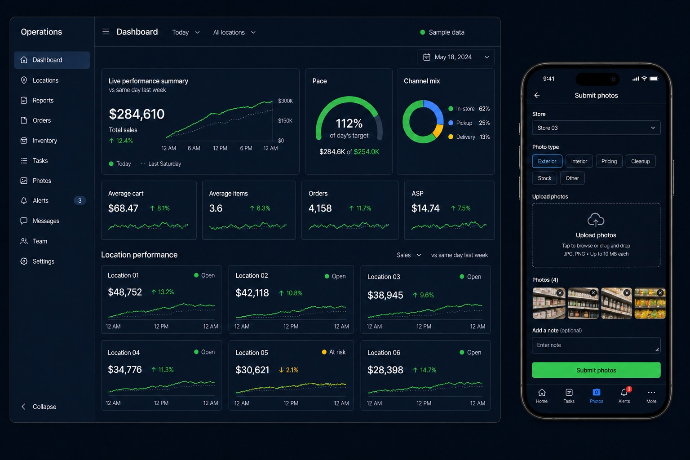
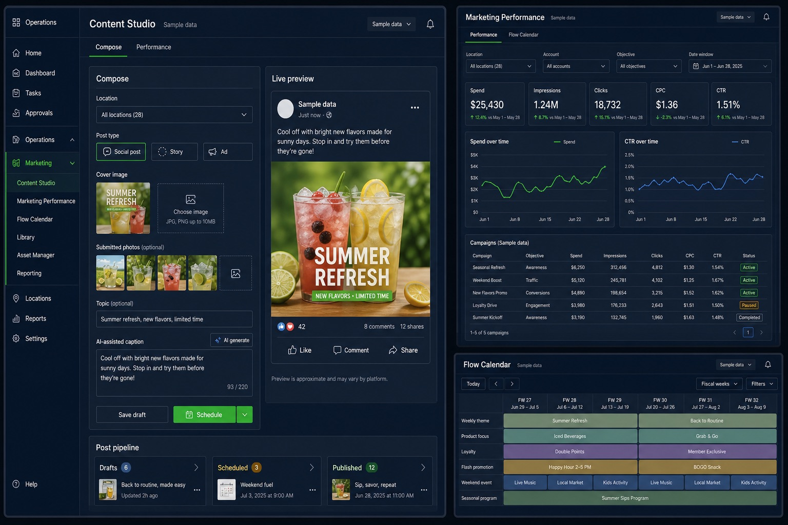
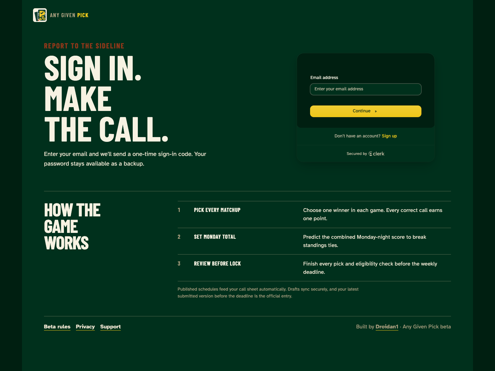
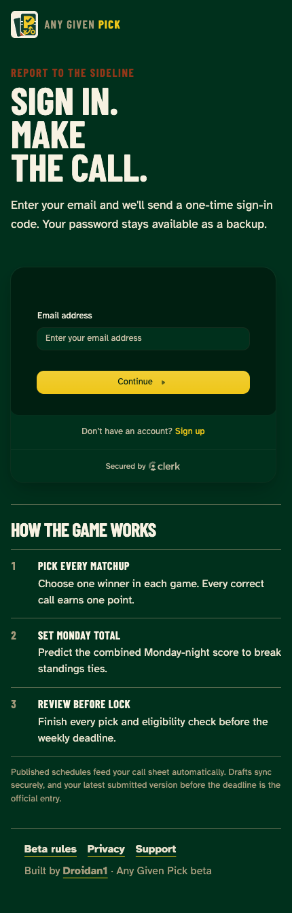
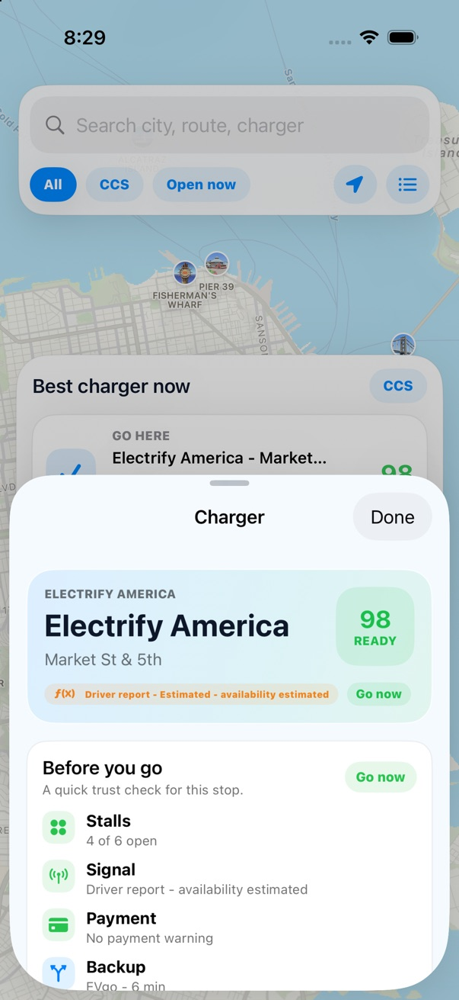
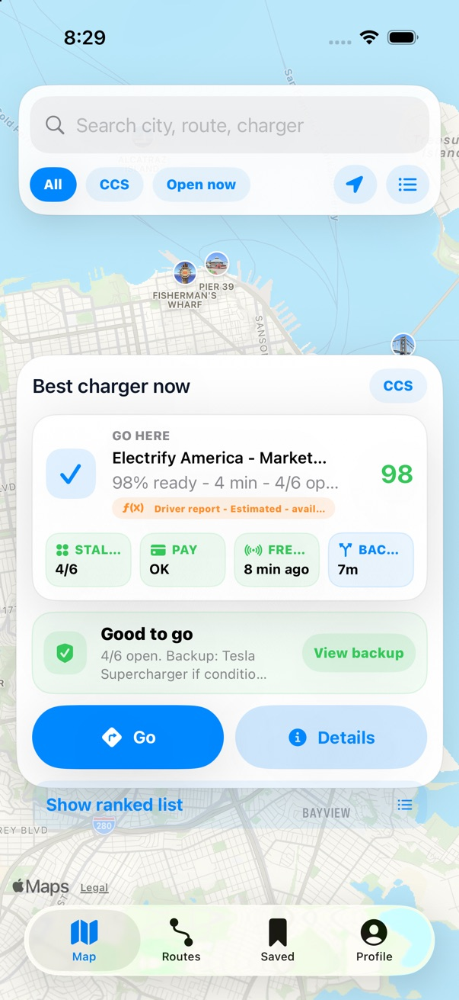
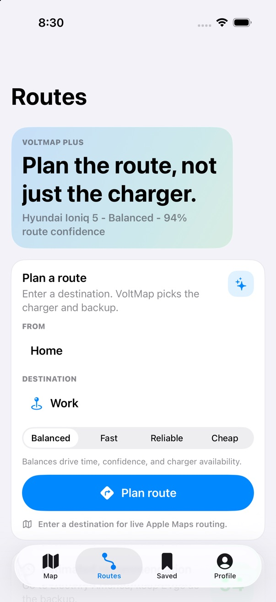

Multi-location operations PWA
A production PWA used daily across multiple locations, bringing sales pacing, labor planning, merchandising, inventory, and supply workflows into one role-aware workspace.
Brian Howard · AI developer · Fort Wayne, Indiana
I turn operational friction into useful software, combining 15+ years of retail leadership with hands-on AI, web, mobile, and automation development.
Selected work
Three products shown in depth, followed by selected operational concepts. Each one begins with a real workflow and a specific decision that software can make easier.
Explore my GitHub

A production PWA used daily across multiple locations, bringing sales pacing, labor planning, merchandising, inventory, and supply workflows into one role-aware workspace.


A weekly pro-football pick’em game for approved Indiana adults. Players choose every matchup, set a Monday-night tiebreaker, and review a complete entry before the deadline. Autosaved drafts, published schedules, scoring, standings, secure sign-in, and eligibility checks support the full game loop.



A native SwiftUI app designed to answer one practical EV question: which nearby charger is most likely to work right now? VoltMap ranks stations by confidence, explains availability and signal freshness, then carries that decision into route planning, saved commutes, alerts, and issue reporting.
Product explorations
Dashboards, inventory tools, pricing controls, reporting, and task automation designed around store-level realities.
Concept · Retail systemsCustom promotions, multi-buy pricing, inventory support, and focused tools for busy store teams.
Concept · POS integrationThe advantage
Fifteen years in retail operations taught me where processes break, how teams actually adopt tools, and why clarity matters under pressure. That experience now shapes every product decision I make, from the first workflow map to the final interface.
How I build
“The interface should make the next decision easier.”
I remove noise, establish hierarchy, and give every screen one clear job.
“Useful beats impressive when the work gets busy.”
I prioritize real workflows and practical outcomes over novelty for its own sake.
“Trust is built in the small, repeated moments.”
I design for predictable behavior, clear feedback, and workflows people can rely on.
Partnerships and product work
I’m open to product testing, developer programs, beta access, software and hardware evaluations, case studies, and focused development collaborations.